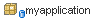
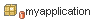

The IDE's Subversion support enables you to view and manage the evolution of changes in version-controlled files.
The IDE's Subversion support enables you to view version status information in many of the IDE's windows, including the Versioning, Projects, Files, and Favorites windows. The Versioning window, however, represents the primary place within which to manage version-controlled files by displaying a list of all of the new, modified, and removed files in the currently selected project or directory.
The IDE displays version-controlled files using the following color coding and font styles:
| Color Coding | Description |
|---|---|
|
Green. Indicates that the file is a new local file that does not yet exist in the repository. |
|
Blue. Indicates that the file has been modified locally. |
| Red. Indicates that the file contains conflicts. You must employ the Resolve Conflicts command (Subversion > Resolve Conflicts) for such files. | |
| Grey. Indicates that the file is ignored by Subversion and will not be included when calling versioning commands. In the Versioning window, grey text signifies deleted files. | |
| Strike-through. Indicates that the file is excluded when calling the Commit command. All other Subversion commands, however, work as usual. Note that files displayed in the strike-through style only appear in the Versioning window and Commit dialog. They will not appear in Diff panes, nor will their parent folders (or packages) display badges if they are modified. |
Current Subversion file status is indicated by adding the following badges to project, package and directory icons:
| Badge | Description |
|---|---|
|  | Locally Modified Badge. A blue badge on a folder or package node marks folders or packages that contain locally modified or new files. In the case of packages, this badge applies only to the package itself and not its subpackages. For folders, the badge indicates local modifications in that folder or any of its subfolders. |
|  | Conflict Badge. A red badge on a folder or package node marks folders or packages that contain files for which the repository copy of the file contains changes which conflict with the local version. In case of packages, this badge applies only to the package itself and not its subpackages. For folders, the badge indicates local modifications in that folder or any of its subfolders. |